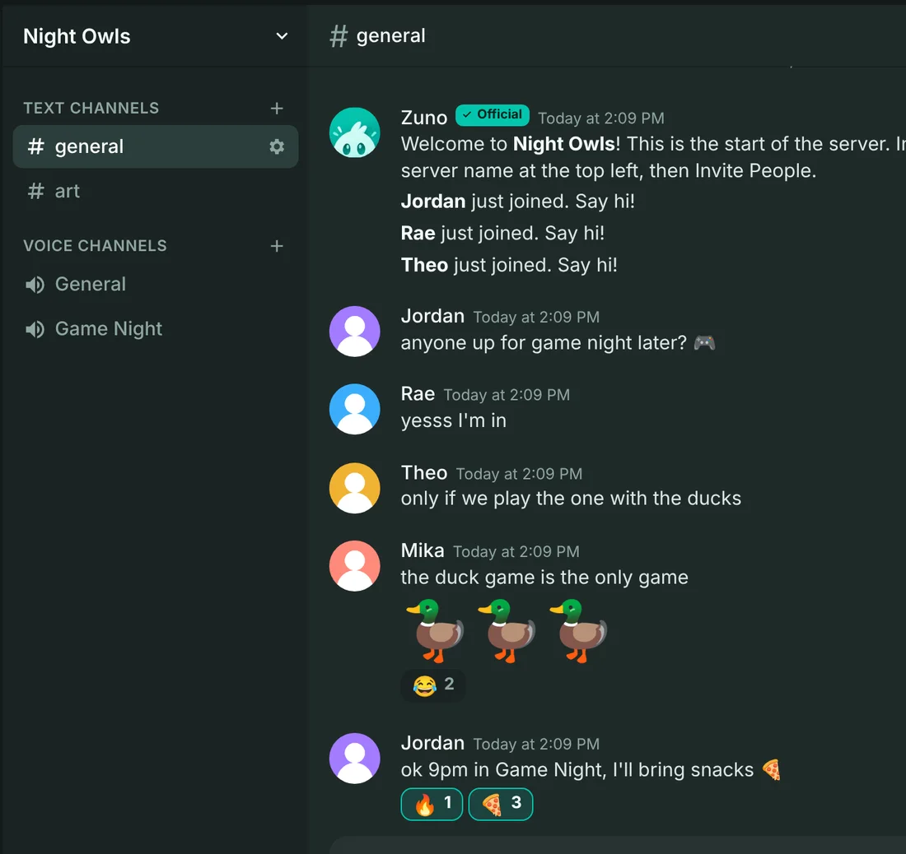

A server for every group
Make a server for your friends, your class or your game squad, then send them an invite. Split the talk into text channels and keep everyone in one place.
- Text and voice channels you name yourself
- React to anything with emoji, or send big emoji-only messages
- See who's online, who's typing, and who just joined